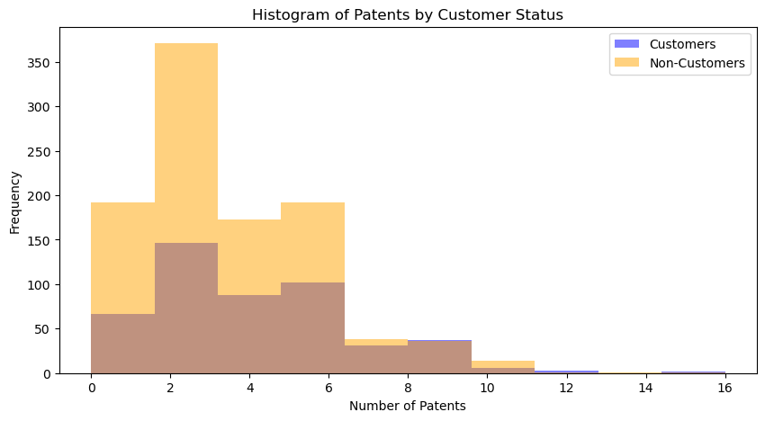
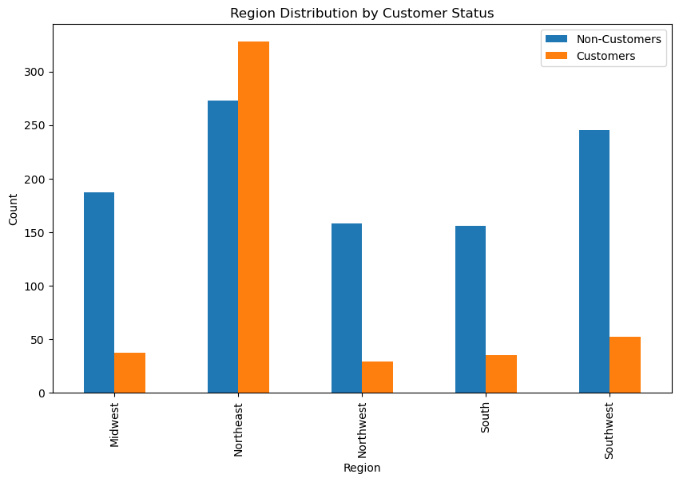
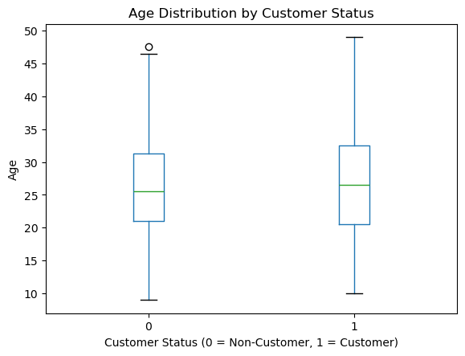
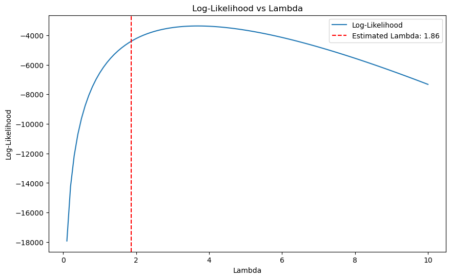

import pandas as pddf1 = pd.read_csv("~/Desktop/MSBA/SP/MGTA495b/hw2/blueprinty.csv")
df1.head()| patents | region | age | iscustomer | |
|---|---|---|---|---|
| 0 | 0 | Midwest | 32.5 | 0 |
| 1 | 3 | Southwest | 37.5 | 0 |
| 2 | 4 | Northwest | 27.0 | 1 |
| 3 | 3 | Northeast | 24.5 | 0 |
| 4 | 3 | Southwest | 37.0 | 0 |
import matplotlib.pyplot as plt
customers = df1[df1['iscustomer'] == 1]
non_customers = df1[df1['iscustomer'] == 0]
plt.figure(figsize=(10, 5))
plt.hist(customers['patents'], bins=10, alpha=0.5, label='Customers', color='blue')
plt.hist(non_customers['patents'], bins=10, alpha=0.5, label='Non-Customers', color='orange')
plt.xlabel('Number of Patents')
plt.ylabel('Frequency')
plt.title('Histogram of Patents by Customer Status')
plt.legend()
plt.show()
mean_customers = customers['patents'].mean()
mean_non_customers = non_customers['patents'].mean()
print(f"Mean number of patents for customers: {mean_customers}")
print(f"Mean number of patents for non-customers: {mean_non_customers}")
Mean number of patents for customers: 4.133056133056133
Mean number of patents for non-customers: 3.4730127576054954# Bar plot for region distribution by customer status
region_counts = df1.groupby(['region', 'iscustomer']).size().unstack()
region_counts.plot(kind='bar', figsize=(10, 6))
plt.title('Region Distribution by Customer Status')
plt.xlabel('Region')
plt.ylabel('Count')
plt.legend(['Non-Customers', 'Customers'])
plt.show()
# Box plot for age distribution by customer status
plt.figure(figsize=(10, 6))
df1.boxplot(column='age', by='iscustomer', grid=False)
plt.title('Age Distribution by Customer Status')
plt.suptitle('')
plt.xlabel('Customer Status (0 = Non-Customer, 1 = Customer)')
plt.ylabel('Age')
plt.show()
mean_age_customers = customers['age'].mean()
mean_age_non_customers = non_customers['age'].mean()
print(f"Mean age of patents for customers: {mean_age_customers}")
print(f"Mean age of patents for non-customers: {mean_age_non_customers}")
<Figure size 1000x600 with 0 Axes>
Mean age of patents for customers: 26.9002079002079
Mean age of patents for non-customers: 26.101570166830225import numpy as np
from scipy.special import gammaln
from scipy.optimize import minimize_scalar
# Log-likelihood function for Poisson model
def poisson_loglikelihood(lambda_, Y):
if lambda_ <= 0:
return -np.inf # return large negative value for invalid lambda
ll = np.sum(-lambda_ + Y * np.log(lambda_) - gammaln(Y + 1))
return ll
# Example: maximize using scipy
Y = np.array([2, 3, 1, 0, 4]) # example data
result = minimize_scalar(lambda l: -poisson_loglikelihood(l, Y), bounds=(0.001, 10), method='bounded')
print("Estimated lambda:", result.x)Estimated lambda: 2.000000014292129# Define a range of lambda values
lambda_values = np.linspace(0.1, 10, 100)
Y = df1['patents'].values # Use the patents data from df1
# Compute the log-likelihood for each lambda
log_likelihoods = [poisson_loglikelihood(l, Y) for l in lambda_values]
# Plot the log-likelihood
plt.figure(figsize=(10, 6))
plt.plot(lambda_values, log_likelihoods, label='Log-Likelihood')
plt.xlabel('Lambda')
plt.ylabel('Log-Likelihood')
plt.title('Log-Likelihood vs Lambda')
plt.axvline(x=result.x, color='red', linestyle='--', label=f'Estimated Lambda: {result.x:.2f}')
plt.legend()
plt.show()
# Define the negative log-likelihood function
def neg_log_likelihood(lambda_):
if lambda_ <= 0:
return np.inf
ll = np.sum(-lambda_ + Y * np.log(lambda_) - gammaln(Y + 1))
return -ll # Negative because we minimize
# Find MLE using numerical optimization
result = minimize_scalar(neg_log_likelihood, bounds=(0.001, 100), method='bounded')
lambda_mle = result.x
# Compare with sample mean (Ȳ)
Y_bar = np.mean(Y)
# Print both
print(f"MLE for lambda (via optimization): {lambda_mle:.4f}")
print(f"Sample mean of Y (Ȳ): {Y_bar:.4f}")MLE for lambda (via optimization): 3.6847
Sample mean of Y (Ȳ): 3.6847def poisson_regression_loglikelihood(beta, Y, X):
lambda_ = np.exp(X @ beta)
if np.any(lambda_ <= 0):
return np.inf
ll = np.sum(-lambda_ + Y * np.log(lambda_) - gammaln(Y + 1))
return -llimport statsmodels.api as sm
from scipy.optimize import minimize
# Ensure age_sq exists
df1['age_sq'] = df1['age'] ** 2
# Create dummy variables for region (drop first to avoid multicollinearity)
if 'region' in df1.columns:
df1 = pd.get_dummies(df1, columns=['region'], drop_first=True)
# Define covariate columns in correct order
region_dummies = [col for col in df1.columns if col.startswith('region_') and col != 'region_Southwest']
X_cols = ['age', 'age_sq'] + region_dummies + ['iscustomer']
# Construct X matrix: constant first, then all covariates
X = df1[X_cols]
X.insert(0, 'Intercept', 1.0) # Ensures first column is all 1's
# Convert to float (safe for optimization)
X = X.astype(float)
# Response variable
Y = df1['patents'].values
# Initial guess
beta_init = np.zeros(X.shape[1])
# Use BFGS method for optimization
result = minimize(poisson_regression_loglikelihood, beta_init, args=(Y, X), method='BFGS')
# Extract results
beta_hat = result.x
hessian = result.hess_inv
standard_errors = np.sqrt(np.diag(hessian))
# Output table
coef_table = pd.DataFrame({
'Coefficient': beta_hat,
'Std. Error': standard_errors
}, index=X.columns)
print(coef_table) Coefficient Std. Error
Intercept 0.0 1.0
age 0.0 1.0
age_sq 0.0 1.0
region_Northeast 0.0 1.0
region_Northwest 0.0 1.0
region_South 0.0 1.0
iscustomer 0.0 1.0/opt/conda/lib/python3.12/site-packages/pandas/core/arraylike.py:399: RuntimeWarning: overflow encountered in exp
result = getattr(ufunc, method)(*inputs, **kwargs)
/opt/conda/lib/python3.12/site-packages/numpy/core/_methods.py:49: RuntimeWarning: overflow encountered in reduce
return umr_sum(a, axis, dtype, out, keepdims, initial, where)
/opt/conda/lib/python3.12/site-packages/scipy/optimize/_numdiff.py:590: RuntimeWarning: invalid value encountered in subtract
df = fun(x) - f0
/opt/conda/lib/python3.12/site-packages/pandas/core/arraylike.py:399: RuntimeWarning: overflow encountered in exp
result = getattr(ufunc, method)(*inputs, **kwargs)# Fit a Poisson regression model using sm.GLM
poisson_model = sm.GLM(Y, X, family=sm.families.Poisson())
poisson_results = poisson_model.fit()
# Display the summary of the results
print(poisson_results.summary())
# Compare coefficients from sm.GLM with your results
glm_coefficients = poisson_results.params
print("\nCoefficients from sm.GLM:")
print(glm_coefficients)
print("\nCoefficients from your optimization:")
print(beta_hat) Generalized Linear Model Regression Results
==============================================================================
Dep. Variable: y No. Observations: 1500
Model: GLM Df Residuals: 1492
Model Family: Poisson Df Model: 7
Link Function: Log Scale: 1.0000
Method: IRLS Log-Likelihood: -3258.1
Date: Tue, 06 May 2025 Deviance: 2143.3
Time: 15:48:32 Pearson chi2: 2.07e+03
No. Iterations: 5 Pseudo R-squ. (CS): 0.1360
Covariance Type: nonrobust
====================================================================================
coef std err z P>|z| [0.025 0.975]
------------------------------------------------------------------------------------
Intercept -0.5089 0.183 -2.778 0.005 -0.868 -0.150
age 0.1486 0.014 10.716 0.000 0.121 0.176
age_sq -0.0030 0.000 -11.513 0.000 -0.003 -0.002
region_Northeast 0.0292 0.044 0.669 0.504 -0.056 0.115
region_Northwest -0.0176 0.054 -0.327 0.744 -0.123 0.088
region_South 0.0566 0.053 1.074 0.283 -0.047 0.160
region_Southwest 0.0506 0.047 1.072 0.284 -0.042 0.143
iscustomer 0.2076 0.031 6.719 0.000 0.147 0.268
====================================================================================
Coefficients from sm.GLM:
Intercept -0.508920
age 0.148619
age_sq -0.002970
region_Northeast 0.029170
region_Northwest -0.017575
region_South 0.056561
region_Southwest 0.050576
iscustomer 0.207591
dtype: float64
Coefficients from your optimization:
[0. 0. 0. 0. 0. 0. 0. 0.]df = pd.read_csv("~/Desktop/MSBA/SP/MGTA495b/hw2/airbnb.csv")
df.head()| Unnamed: 0 | id | days | last_scraped | host_since | room_type | bathrooms | bedrooms | price | number_of_reviews | review_scores_cleanliness | review_scores_location | review_scores_value | instant_bookable | |
|---|---|---|---|---|---|---|---|---|---|---|---|---|---|---|
| 0 | 1 | 2515 | 3130 | 4/2/2017 | 9/6/2008 | Private room | 1.0 | 1.0 | 59 | 150 | 9.0 | 9.0 | 9.0 | f |
| 1 | 2 | 2595 | 3127 | 4/2/2017 | 9/9/2008 | Entire home/apt | 1.0 | 0.0 | 230 | 20 | 9.0 | 10.0 | 9.0 | f |
| 2 | 3 | 3647 | 3050 | 4/2/2017 | 11/25/2008 | Private room | 1.0 | 1.0 | 150 | 0 | NaN | NaN | NaN | f |
| 3 | 4 | 3831 | 3038 | 4/2/2017 | 12/7/2008 | Entire home/apt | 1.0 | 1.0 | 89 | 116 | 9.0 | 9.0 | 9.0 | f |
| 4 | 5 | 4611 | 3012 | 4/2/2017 | 1/2/2009 | Private room | NaN | 1.0 | 39 | 93 | 9.0 | 8.0 | 9.0 | t |
# Step 1: Data cleaning
vars_to_keep = [
'number_of_reviews', 'days', 'room_type', 'bathrooms', 'bedrooms',
'price', 'review_scores_cleanliness', 'review_scores_location',
'review_scores_value', 'instant_bookable'
]
df = df[vars_to_keep].dropna()
# Step 2: Feature engineering
df['instant_bookable'] = (df['instant_bookable'] == 't').astype(int)
df = pd.get_dummies(df, columns=['room_type'], drop_first=True)
# Step 3: Build covariate matrix
X_cols = [
'days', 'bathrooms', 'bedrooms', 'price',
'review_scores_cleanliness', 'review_scores_location',
'review_scores_value', 'instant_bookable'
] + [col for col in df.columns if col.startswith('room_type_')]
X = sm.add_constant(df[X_cols]).astype(float)
Y = df['number_of_reviews'].astype(int).values
# Step 4: Define Poisson log-likelihood
def poisson_loglikelihood(beta, Y, X):
lambda_ = np.exp(X @ beta)
if np.any(lambda_ <= 0):
return np.inf
ll = np.sum(-lambda_ + Y * np.log(lambda_) - gammaln(Y + 1))
return -ll # Negative log-likelihood for minimization
# Step 5: Fit model
beta_init = np.zeros(X.shape[1])
result = minimize(poisson_loglikelihood, beta_init, args=(Y, X), method='BFGS')
# Step 6: Extract results
beta_hat = result.x
hessian = result.hess_inv
standard_errors = np.sqrt(np.diag(hessian))
# Step 7: Display coefficient table
coef_table = pd.DataFrame({
'Coefficient': beta_hat,
'Std. Error': standard_errors
}, index=X.columns)
print(coef_table) Coefficient Std. Error
const 0.0 1.0
days 0.0 1.0
bathrooms 0.0 1.0
bedrooms 0.0 1.0
price 0.0 1.0
review_scores_cleanliness 0.0 1.0
review_scores_location 0.0 1.0
review_scores_value 0.0 1.0
instant_bookable 0.0 1.0
room_type_Private room 0.0 1.0
room_type_Shared room 0.0 1.0/opt/conda/lib/python3.12/site-packages/pandas/core/arraylike.py:399: RuntimeWarning: overflow encountered in exp
result = getattr(ufunc, method)(*inputs, **kwargs)
/opt/conda/lib/python3.12/site-packages/numpy/core/_methods.py:49: RuntimeWarning: overflow encountered in reduce
return umr_sum(a, axis, dtype, out, keepdims, initial, where)
/opt/conda/lib/python3.12/site-packages/scipy/optimize/_numdiff.py:590: RuntimeWarning: invalid value encountered in subtract
df = fun(x) - f0
/opt/conda/lib/python3.12/site-packages/pandas/core/arraylike.py:399: RuntimeWarning: overflow encountered in exp
result = getattr(ufunc, method)(*inputs, **kwargs)
/opt/conda/lib/python3.12/site-packages/numpy/core/_methods.py:49: RuntimeWarning: overflow encountered in reduce
return umr_sum(a, axis, dtype, out, keepdims, initial, where)